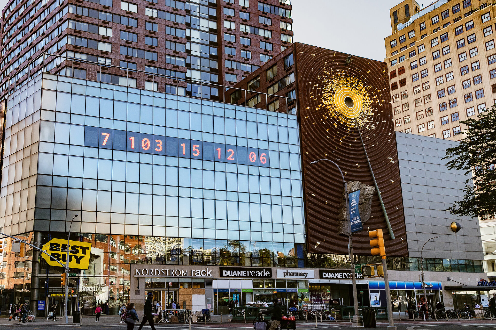
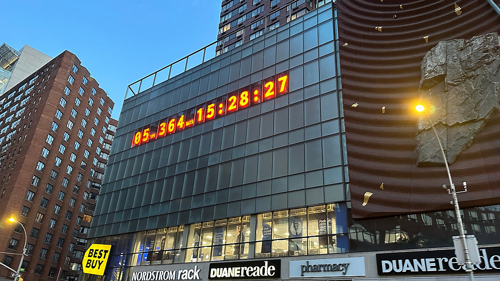
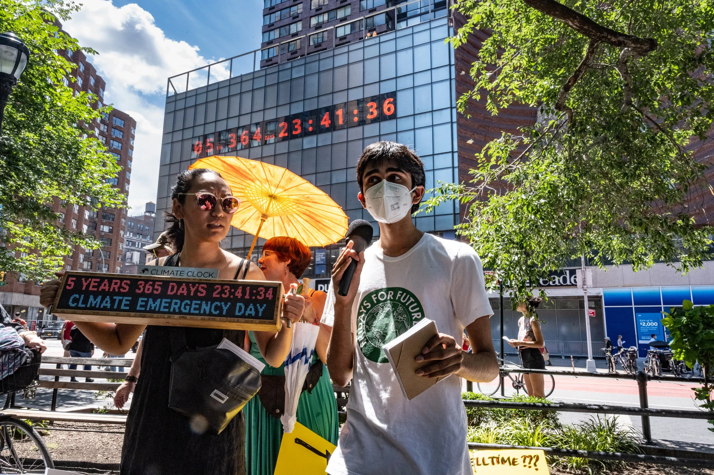
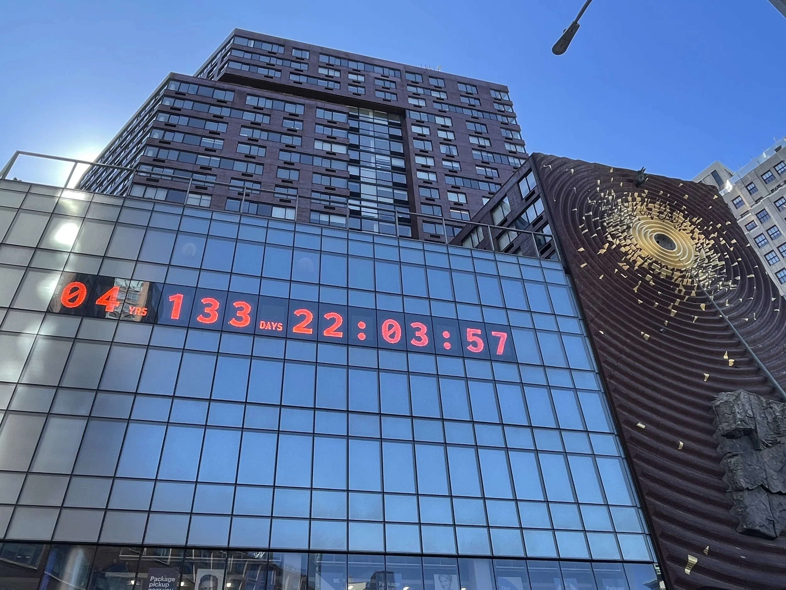

3
YRS
078
DAYS
16:57:34
Climate Clock in New York Union Square
The NYC Climate Clock and the Limits of Climate Data
How much can a number make you feel?
This website explores how the Climate Clock in Union Square turns climate science into a public countdown. It asks whether a giant number can create urgency, understanding, and emotional connection—or whether it risks making the climate crisis feel abstract.
Hover over the clock. The deadline flickers into the feelings and realities behind the number.
Introduction

The Climate Clock in Union Square is a public installation that displays a countdown tied to the remaining carbon budget for limiting global warming. It transforms climate science into a giant digital timer visible in everyday city life. It calls on people to take climate issues seriously.
This website exists to study the Climate Clock not just as a piece of public art, but as a media object. It asks how climate data becomes a public image, how numbers shape feeling, and what might be missing when crisis is communicated mainly through a countdown.
When climate change is represented through numbers, countdowns, and scientific data, does it really help people understand the crisis? Or does it create anxiety without deeper understanding?
Images



Ready to play some games?
Play